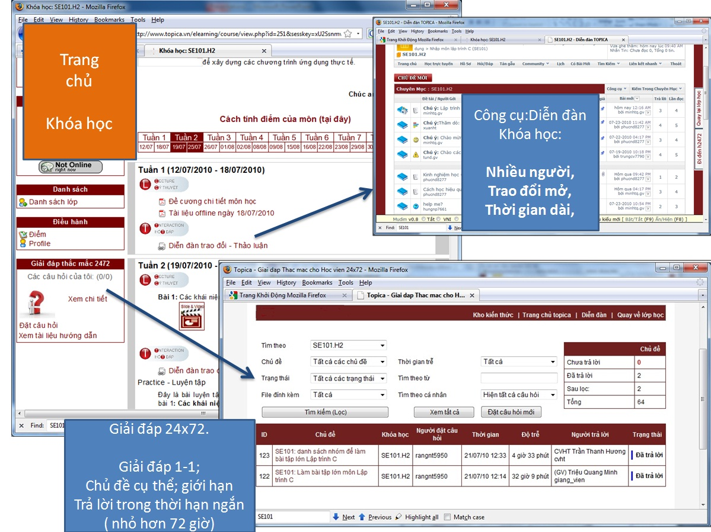
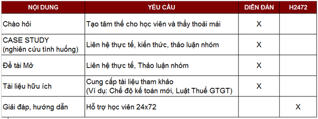
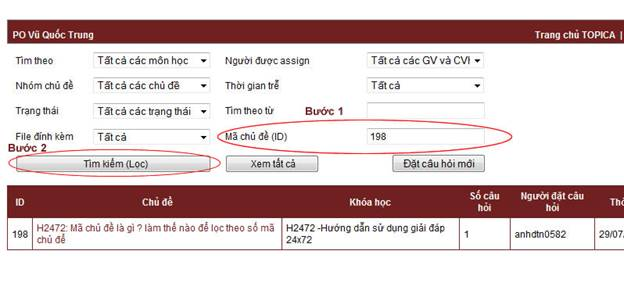
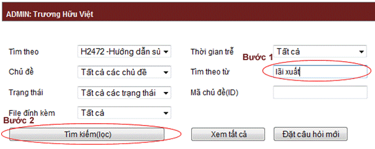
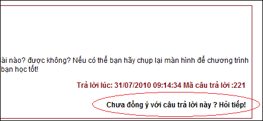
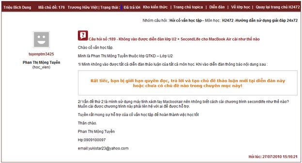

Công việc giải đáp thắc mắc cho sinh viên Topica được xây dựng dựa theo môn hình của Đại học mở Anh quốc. Đó là tiếp nhận, xử lý câu hỏi trong 24 giờ và trả lời trong vòng 72 giờ.
H2472 là công cụ giúp cho giảng viên và nhân viên chương trình thực hiện chính sách này.

Tất cả sinh viên: để đặt câu hỏi, thắc mắc cần trả lời ngay cho chương trình
Giảng viên, trợ giảng, nhân viên kỹ thuật, cố vấn học tập: để giải đáp cho sinh viên.
H2472 có các mục tiêu chính là đảm bảo giải đáp cho sinh viên kịp thời đồng thời tạo kho kiến thức để tham khảo sau này.
Chủ đề trong H2472 chủ yếu là chủ đề đóng, cần giải đáp càng nhanh càng tốt, ngược lại với chủ đề trong diễn đàn là chủ đề mở, có nhiều người tham gia, nhiều đáp án, thời gian tranh luận có thể dài hơn 1 tuần.
Đối với giảng viên, tại chủ đề trong diễn dàn, sẽ gợi ý tiếp tục thảo luận, và chỉ chốt kiến thức sau khi có nhiều thành viên tham gia trả lời, tại H2472 sẽ trả lời trực tiếp ngay vào thắc mắc được đặt ra.
Về cơ bản, sinh viên và Giảng viên nên phân các chủ đề như sau:

Đặt câu hỏi vào H2472 được tính vào điểm chuyên cần, sinh viên đặt câu hỏi trong khóa học nào sẽ được tính tương đương một bài post trên diễn đàn của khóa học đó.
Khóa học "H2472 - Hướng dẫn sử dụng hệ thống giải đáp H2472" được phòng kỹ thuật đề xướng nhằm giúp các anh chị học viên,các thầy cô giáo làm quen với hệ thống H2472.
Khóa học H2472 không thuộc các môn học theo quy định, do đó không tính điểm.
Thời gian học sẽ trải dài theo các khóa học khác.
H2472 có diễn đàn trao đổi riêng, chúng ta có thể trao đổi trong diễn đàn khóa học H2472, nhưng trong diễn đàn này không bao gồm nội dung hỏi đáp.
Kho Kiến Thức là nơi tập trung những câu hỏi-đáp hữu ích.Giúp sinh viên và giảng viên TOPICA tích lũy và sử dụng lại được kiến thức trong quá trình dạy-học.
Bước 1 : Điền mã số chủ đề vào ô “Mã chủ đề (ID)”
Bước 2 : Bấm vào “Tìm kiếm (lọc)”

Bước 1 : Điền từ khóa cần tìm vào ô “Tìm theo từ”
Bước 2 : Bấm vào “Tìm kiếm (lọc)”

Mỗi chủ đề được tạo ra, nếu người hỏi chưa thỏa mãn với câu trả lời, hoặc còn thắc mắc thì có thể hỏi tiếp ở ngay bên trong chủ đề, mỗi khi câu hỏi được trả lời xong, sẽ hiện lên button hỏi tiếp. Tuy nhiên để không gây khó khăn và cũng dễ dàng hơn cho người trả lời, chúng tôi chỉ cho phép người tạo chủ đề mới có quyền hỏi tiếp.

Đầu tiên bạn phải viết rõ là gặp lỗi do sử dụng phần mềm gì, và trong thao tác nào, nếu sử dụng trình duyệt thì cũng ghi rõ trình duyệt gì.
Chú ý để đảm bảo việc chúng tôi có thể trả lời chính xác hơn, bạn nên chụp ảnh màn hình tại thời điểm lỗi và đính kèm vào chủ đề hỏi.

Bạn cần chú ý những điểm sau :
- Câu hỏi của bạn phải viết bằng tiếng Việt có dấu.
- Đặt mã môn học trên đầu câu hỏi, ví dụ : ECO101 : Vẫn chưa có link của bài tập số 1.
- Trước khi đặt câu hỏi bạn hãy tìm kiếm nội dung cần hỏi trong khóa học của mình hoặc trong kho kiến thức, việc này giúp bạn có thể nhanh chóng có câu trả lời sớm và cũng tránh các câu hỏi lặp đi lặp lại được gửi đến chúng tôi.
Đúng nhất là phải post vào khóa ECO101. Khóa H2472 chỉ dành cho post những vấn đề không liên quan đến môn học cụ thể. (trước đây chỉ post các câu hỏi liên quan đến module H2472)
Khi bạn post đúng vào khóa môn học bạn sẽ được:
1) Trả lời nhanh hơn, vì tổ bộ môn trực tiếp phụ trách trực tiếp xử lý câu hỏi.
2) Tính điểm chuyên cần theo quy định của tổ bộ môn
Khi bạn Post (nhầm) vào khóa H2472. Bộ phận kỹ thuật Topica vẫn cố gắng phân loại và chuyển câu hỏi cho tổ bộ môn. Bạn cũng sẽ vẫn được trả lời. Nhưng khả năng trả lời sẽ chậm hơn và không tính được điểm chuyên cần vì máy tính đã đếm câu hỏi của bạn vào khóa H2472.